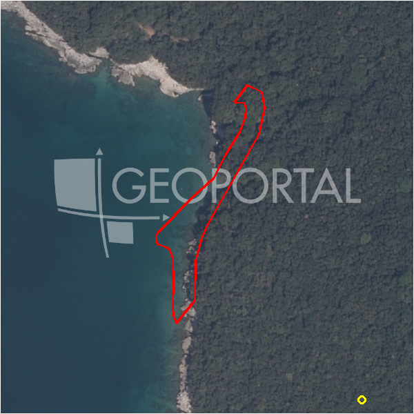

#44404 · PRILIKA - Pavićini, građevinska parcela 1.200 m2,
Duga Uvala, Marčana, Istarska · zemljiste · njuskalo · status active · oglas ↗
Ocjena
- Score
- 55 rule 55 · LLM – · 12.09.2026.
- RLV
- 311.000 € (229 €/m²) · ratio 3,25
- Ukupna investicija
- 2,78 M€
- GBP
- 1.088 m²
- Feedback
- –
- CRM
- –
Oglas
- Cijena
- 95.600 € (80 €/m²)
- Površina
- 1.195 m² · DKP 1.360 m² (odstupanje 13,8 %)
- Prodavatelj
- agencija · Hot Corner d.o.o.
- Prvi put
- 11.09.2026. · zadnje 11.09.2026. · 0 d na tržištu
Povijest cijene
| Datum | Cijena |
|---|---|
| 11.09.2026. | 95.600 € |
Flagovi
zop_70_100 ZOP pojas 70/100 m (−10)zone_uncertainty zona nije pregledana (reviewed: false) (−5)
llm_pending LLM ekstrakcija/ocjena nedostupna
Komponente score-a
| rlv | {'gbp': 1087.968, 'kis': 0.8, 'nkp': 815.9760000000001, 'noi': None, 'rlv': 310957.8104347836, 'ratio': 3.252696761870121, 'value': None, 'phases': 1, 'profile': 'obala_visestambeno', 'gdv_neto': 3590294.400000001, 'cost_soft': 108796.8, 'gdv_bruto': 4487868.000000001, 'kis_known': False, 'total_inv': 2777737.28, 'cost_build': 2175936.0, 'cost_other': 391668.48, 'cost_sales': 134636.04000000004, 'demolition': False, 'gbp_source': 'kis', 'rlv_per_m2': 228.65217391304418, 'parcel_area': 1359.96, 'parcelation': False, 'roi_on_cost': 0.2440551469287984, 'profit_at_ask': 677921.0800000008, 'cost_demolition': 0.0, 'total_inv_phase': 2777737.28, 'parcel_area_effective': 1359.96, 'sale_price_per_m2_nkp': 5500.0} |
| hard | [] |
| info | ['llm_pending'] |
| rubric | {'permits': {'max': 5.0, 'detail': {'permit': 'none'}, 'points': 0.0}, 'location': {'max': 15.0, 'detail': {'source': 'rlv.yaml:istra_ostalo/row1', 'sale_price_per_m2_nkp': 5500.0}, 'points': 11.5}, 'physical': {'max': 4.0, 'detail': {'slope_pct': 18.75, 'slope_points': 1.125, 'sea_row1_bonus': True}, 'points': 2.12}, 'liquidity': {'max': 3.0, 'detail': {'n_cuts': 0, 'points_cut': 0.0, 'points_days': 0.008333333333333333, 'seller_type': 'agencija', 'points_fresh': 0.5, 'price_cut_pct': None, 'days_on_market': 1, 'points_private': 0}, 'points': 0.51}, 'rlv_ratio': {'max': 25.0, 'detail': {'rlv': 310958, 'ratio': 3.253, 'asking_price': 95600.0}, 'points': 25.0}, 'ticket_fit': {'max': 10.0, 'detail': {'asking_price': 95600.0}, 'points': 3.27}, 'zone_quality': {'max': 8.0, 'detail': {'reason': 'zona nepoznata', 'source': 'nepoznato', 'zone_class': None}, 'points': 2.0}, 'profit_potential': {'max': 20.0, 'detail': {'roi_on_cost': 0.244, 'profit_at_ask': 677921}, 'points': 17.42}, 'price_vs_benchmark': {'max': 10.0, 'detail': {'source': 'auto:Marčana', 'deviation': 0.229, 'ask_eur_m2': 80, 'benchmark_eur_m2': 103.77}, 'points': 8.29}} |
| weights | {'llm': 0.4, 'rule': 0.6, 'model': 0.0} |
| penalties | {'zop_70_100': 10, 'zone_uncertainty': 5} |
| raw_score | 70,1 |
| rlv_notes | [] |
| flag_notes | {'max_gbp': 1088, 'zop_band': '70', 'total_inv': 2777737, 'zone_code': None, 'zone_class': None, 'zone_source': 'nepoznato', 'zone_reviewed': None} |
| caps_applied | [] |
GIS
- Čestica
- k.o. 324159, k.č. 2374/34 (pin_buffer, 0,73); k.o. 324159, k.č. 2374/3 (pin_buffer, 0,69); k.o. 324159, k.č. 2374/65 (pin_buffer, 0,66)
- Zona
- – (–)
- kig / kis / katnost
- – / – / –
- GP / UPU
- – · UPU –
- Pristup / nagib
- unknown · 18,8 % (max 28,2 %)
- More
- 0 m · red 1 · ZOP 70
- Zaštite
- Natura ne · zaštićeno ne · kulturno dobro ne
- Zgrade na čestici
- 0 %
- Match
- 0,73
Karta
Ortofoto (DOF)

RLV kalkulacija — pretpostavke
| gbp | {'value': 1087.968, 'source': 'kis'} |
| kis | {'value': 0.8, 'source': 'default_profila'} |
| sea_row | {'value': '1', 'source': 'gis'} |
| soft_pct | {'value': 0.05, 'source': 'profil'} |
| nkp_ratio | {'value': 0.75, 'source': 'profil'} |
| cost_other | {'value': 391668.48, 'source': 'profil: doprinosi+uređenje po m² GBP, financiranje+rezerva % gradnje'} |
| parcel_area | {'value': 1359.96, 'source': 'dkp'} |
| asking_price | {'value': 95600.0, 'source': 'oglas'} |
| margin_on_cost | {'value': 0.15, 'source': 'profil'} |
| build_cost_per_m2_gbp | {'value': 2000.0, 'source': 'profil'} |
| sale_price_per_m2_nkp | {'value': 5500.0, 'source': 'rlv.yaml:istra_ostalo/row1'} |
| transfer_tax_and_acquisition | {'value': 0.06, 'source': 'profil'} |
Ekstrakcija iz oglasa
| access_road | yes |
Benchmarks mikrolokacije
| Vrsta | Vrijednost | n | Od | Izvor |
|---|---|---|---|---|
| land_ask_eur_m2 | 104 | 399 | 11.09.2026. | auto |
Opis oglasa
U ponudi 2 građevinska zemljišta po oko 1.200 m2 po cijeni od 65 eura/m2. Zemljišta se nalaze na atraktivnoj i mirnoj lokaciji nedaleko od Pule i svega 2 kilometra od plaža od Duge Uvale. Sva potrebna infrastruktura je u neposrednoj blizini. Zemljišta imaju direktan pristup na javnu asfaltiranu prometnicu. Lokacijska informacija je dostupna. Na dogovorenu kupoprodajnu cijenu kupac plaća ugovorenu agencijsku proviziju sukladno s uvjetima poslovanja i naknadama poduzeća. Kontakt: Dean +385 99 369 9053 ID KOD AGENCIJE: 2948 Dean Ostović Ovlašteni agent Mob: +385 99 369 9053 Tel: +385 52 212 841 Fax: +385 52 212 841 E-mail: dean@hotcorner.hr www.hotcorner.hr